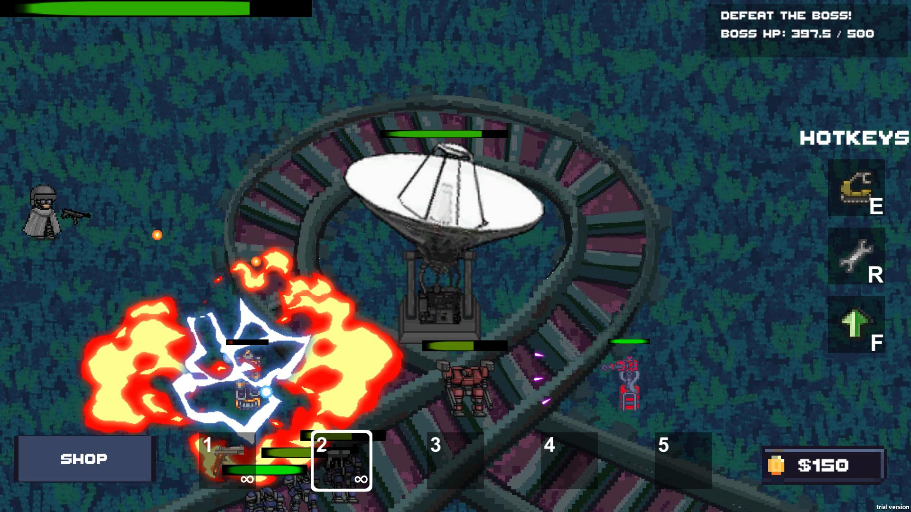
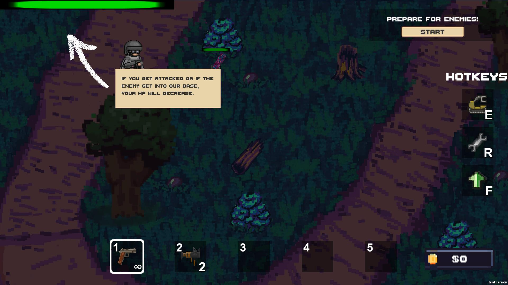
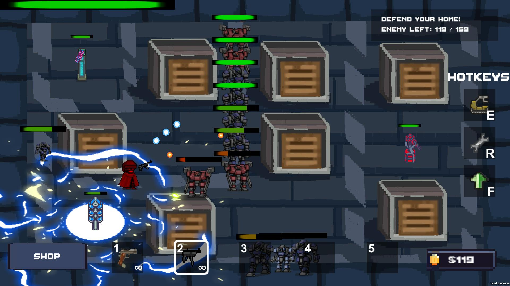
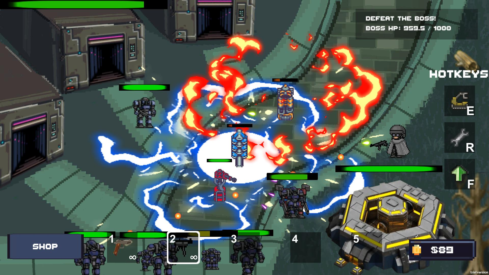
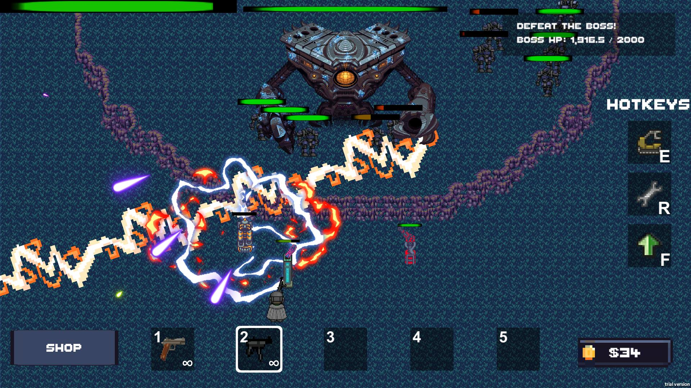

Potato Team 薛丁元(Xue Dingyuan)
刘思岑(Liu Sicen)
张静远(Zhang Jingyuan)
洪山川(Hong Shanchuan)
Path to Strength
There's a big guy in the world... It will come to make trouble for you one day. I guess we're cursed... We have to run laps here every day.
The hero automatically walks right and does all the work automatically every day. You need to make him grow strong enough before the boss arrives. Your job is to organize his day. To hunt monsters for golden coins, or to pick up resources, you just need to place the corresponding building in his path. Plan your resources and buildings properly, you need enough resources to improve your hero's stats.
Game Proposal
WebGL - Click to Play
EXE - Click to Download
Video
If you have trouble with Youtube, you can try this Bilibili Link.


Developers Zhang Rujia
Ian Chong
Cai Muzhen
Su Ye
Turret Agent
Defend your base with turrets and guns in your hands!
Turret Agent is a single-player 2D top-down tower-defense game combining barrage shooting RPG elements. Your role in the game is an elite soldier and engineer, defending against an onslaught of out-of-control robots. As a turret fanatic, you fight with your turrets in addition to the weapons in your hands. Deploy, move and upgrade your turrets in various locations; dodge bullets from enemies; manage resources carefully to make the most of them; defend your base, or destroy your enemy's base!
    Developers 刘宇轩(Yuxuan Liu)
邹力恒(Liheng Zou)
席奴瓦(Nuwa Xi)
江子岩(Ziyan Jang)
李绅(Shen Li)
Let there be LIGHT
Start your adventure and unlock more heroes to survive!
Let there be LIGHT is a single-player 2D roguelite game. One day, GOD asked a brave young man to help purge the seven demons in this world, and the great adventure of the pure brave young man so begins. In the game, you can unlock more heroes with different weapons and skills. With each hero, you are ought to survive 12 minutes in total with enemies coming in more and more and a BOSS every 90s.
Game Proposal
Click to Download EXE


Developers 周雨嫣 Zhou Yuyan
徐弋淳 Xu Yichun
肖雨欣 Xiao Yuxin
陈怡伽 Chen Yijia
刘施乐 Liu Shile
Timid Monster
Am I good enough to have friends?
Timid Monster is a cute and healing-style single player 2D puzzle game. You play as a cute monster controlled by the three demons of fear, loneliness and inferiority. You need to help the little monster to find friends and overcome his inner demons. Collect flowers and letters from his friends, obtain energy, overcome the negative emotions along the way, and live a positive life from now on.
Game Proposal
Game Poster
Click to Play (WebGL)
Click to Download (Windows)
Click to Download (macOS)


Xiaoxi Li
Xi Xia
Haoyang Huang
Tianyu Yang
Puzzle Escape
Puzzle escape is about a lovely polar bear standing on floating puzzle ice, trying to move those piece together to collect its memory and go to next puzzle. The polar bear can move and rotate the ice. And it will encounter dangerous enemy. Also, it can collect some pictures that are about its past.
Proposal slide
Game Pitch
Click to Play(web_GL)
Click to Play(EXE)
Screen Shots

Developers Gong Zhangpeng(龚张芃)
Liu Jiazheng(刘嘉政)
Qin Yibo(秦翌博)
Sun Xiayu(孙夏禹)
Wang Jiahe(王嘉禾)
Rune of the Blazing Ice
Sister taken by the frost
A girl went on a journey
Coming across various creatures
To be friendly or not
To be sincere or not
What would she choose
How would her fate be...
Game Proposal
Click to Play(WebGL Build)
Code In GitHub
Click to Download(Windows Build)


Technology Jiarui Li
Tianle Li
Jiawei Zhou
Fanyuanhang Zhang
Yuxiao Wang
Where Are My Feet
He's an overweight little boy, and he's stepped into his biggest adventure to find his own feet!
After eating burgers & coke day and night, the boy suddenly found that when looking down, he could not see his feet anymore. The boy was shocked completely, and thought that he must have lost his feet by accident!Thus, he sets off to find his missing feet. Along the way he'll encounter varieties of monsters, go through forest, and even climb a snow mountain. Will he reunite with his missing feet in this charming and challenging adventure? Let's see.
Game Proposal
WebGL - Click to Play
EXE - Click to Download


Developers Li Xirui 李熙锐
Yang Yikai 杨译凯
Guo Chengyuan 郭承远
Wang Zheng 王正
Go Linux!!!
Help Linux to invade other OS!
Go Linux is a single-player game with perfect tutorial system, rich Parkour content, a wide variety of enemies, amazing weapon system, interesting maze exploration, and exciting boss fighting.
You play as the linux system and try to invade Windows and Mac! Defeat the defender to the victory!
Pay attention to exploring and interacting with elements on the map to collect bytes for upgrading weapons.
Be careful! The Windows and Mac will try their best to stop you! They will even invade your base! Defend your own base!
熊牧星 (Muxing Xiong)
杨一轩 (Yixuan Yang)
Invasion: Code Name X
Spring comes...
The spring breeze blows the vast green land.
However, war, but not vitality, is growing on the land.
You, the born warrior, will fight to protect your land and make your opponents pay for what they have done.
Game
Proposal
EXE - Click to
Download
Operation Manual
Github
Video
Screen Shots